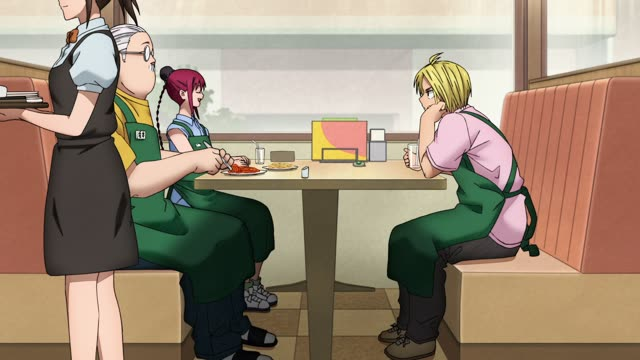

好き・嫌い
| Polite | 好きです・嫌いです |
|---|---|
| Casual | 好き・嫌い most common 好きだ・嫌いだ firmer |
Same meaning: "like, dislike". Only the politeness changes.
Oishinbo · Episode 47
お嫌いですか？
"You don't like it?"
好き means "liked" and 嫌い "disliked". They're not verbs, they're な-adjectives that describe the thing: "it's liked (by me)". So the thing you like or dislike gets が, not を.
On this card, お嫌いですか？ = "you don't like it?". The お in front makes it extra polite. 嫌い is strong, close to "hate"; for "I don't really like it", people usually say あまり好きじゃない.
Before a noun they take な: 好きな食べ物, "favorite food". 嫌い ends in い but it's a な-adjective, so never 嫌くない.

Terrace House
馬刺しが好き。
"I like horse sashimi."
Casual is 好き or 好きだ. On this card, the answer to "What do you like?" is 馬刺し (horse sashimi) + が + 好き.
Quick Examples
A new coworker asks what you do on weekends.
山が好きです。よく登ります。
"I like mountains. I climb a lot."
The thing you like + が + 好きです.
PoliteA friend offers you natto at breakfast.
ごめん、納豆嫌い。
"Sorry, I hate natto."
Casual: plain 嫌い, and the が drops out.
CasualYour host asks if you eat spicy food.
辛いものはあまり好きじゃないです。
"I don't really like spicy food."
The soft way to say you dislike something. は instead of が, because you're contrasting it with other food.
PoliteTwo friends scrolling through a music app.
好きなバンドある？
"Got a favorite band?"
好き + な + noun: "a band you like", which is how Japanese says "favorite".
CasualWith and without
猫です。
"It's a cat." You're just naming it.
猫が好きです。
"I like cats." Now it's about how you feel about it.
食べ物は何ですか？
"What's the food?" Just asking which food it is.
嫌いな食べ物は何ですか？
"What food do you dislike?" 嫌い + な describes the food.
Examples from Media

YouTube · video
皆さんは、ファストフードは好きですか？
"Do you all like fast food?"
Add か to ask "do you like...?". は instead of が because fast food is the topic she's bringing up.

Terrace House
どの辺が好きですか？
"What part do you like?"
Question word + が + 好きですか: "which ... do you like?"
From Up on Poppy Hill
大好きだからです。
"Because I love it."
大好き = "really like, love". It works like 好き: a な-adjective.
Kekkon Dekinai Otoko · Episode 4
結構 好きです。
"I quite like it."

Shirokuma Cafe · Episode 14
僕は好きです。
"I like it."
好き + です, polite.

Shirokuma Cafe · Episode 11
俺は サウナが好きなんだ。
"I like saunas."
サウナ ("sauna") + が + 好き + なんだ = "I like saunas, you see". なんだ explains something about himself.

Sakamoto Days · Episode 10
そもそもマフィア、あまり好きじゃないネ。
"I'm not really into the mafia in the first place."
あまり好きじゃない = "don't really like". The soft way to say 嫌い.
Teasing Master Takagi-san · Season 2, Episode 9
好きだよ。
"I like it."
Further Reading
A Dictionary of Basic Japanese Grammar
Entry "sukida" · p. 426
Entry "kiraida" · pp. 190–191
Tae Kim's Guide to Japanese Grammar
Adjectives · The na-adjective